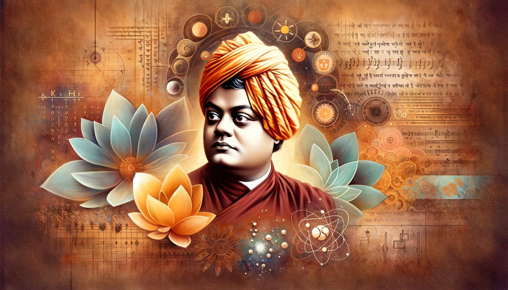
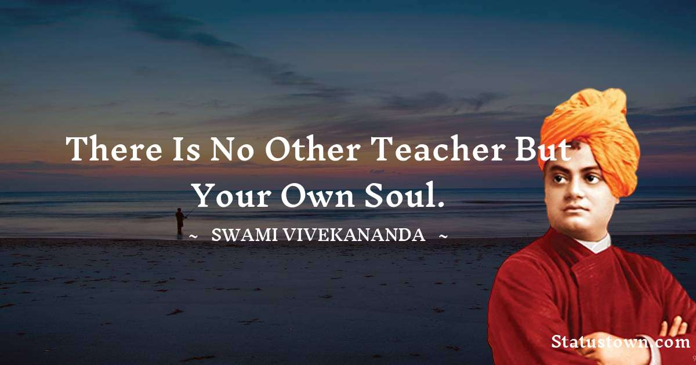
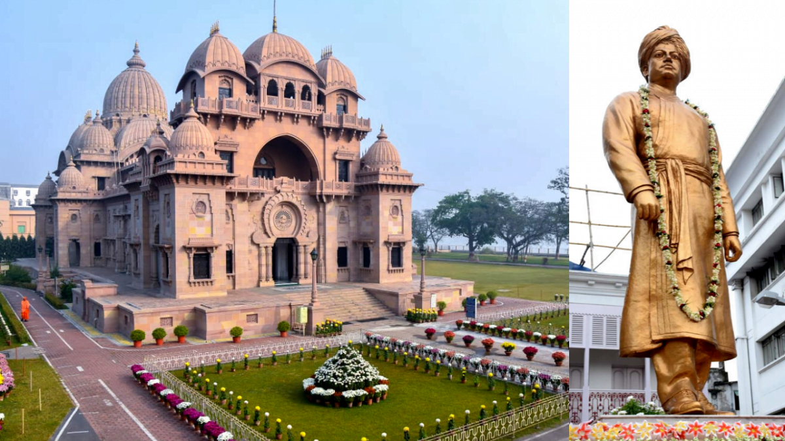
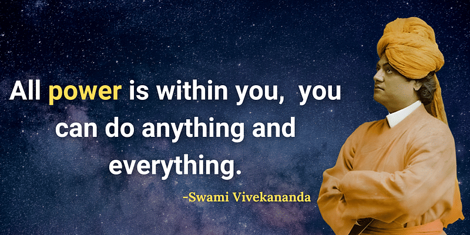
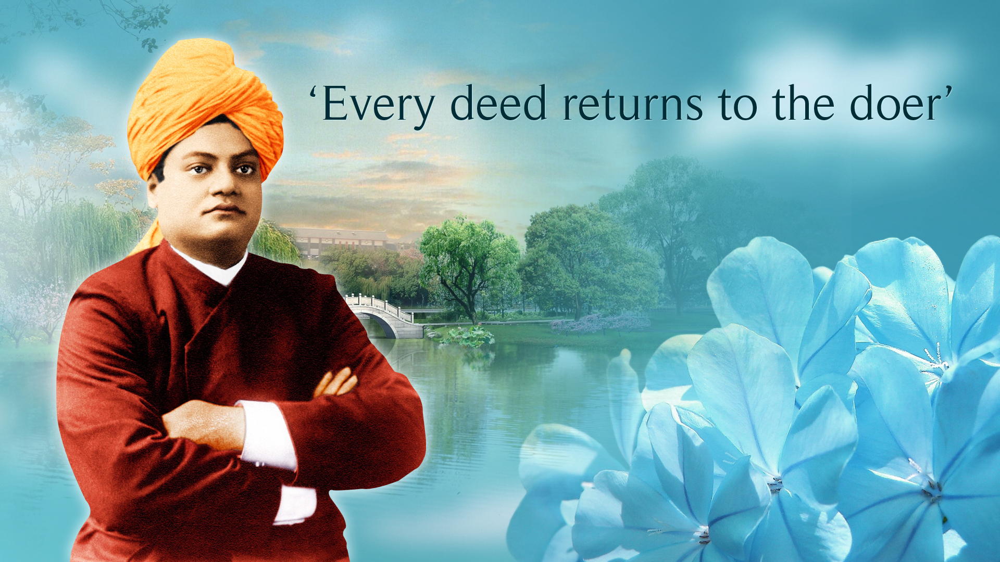
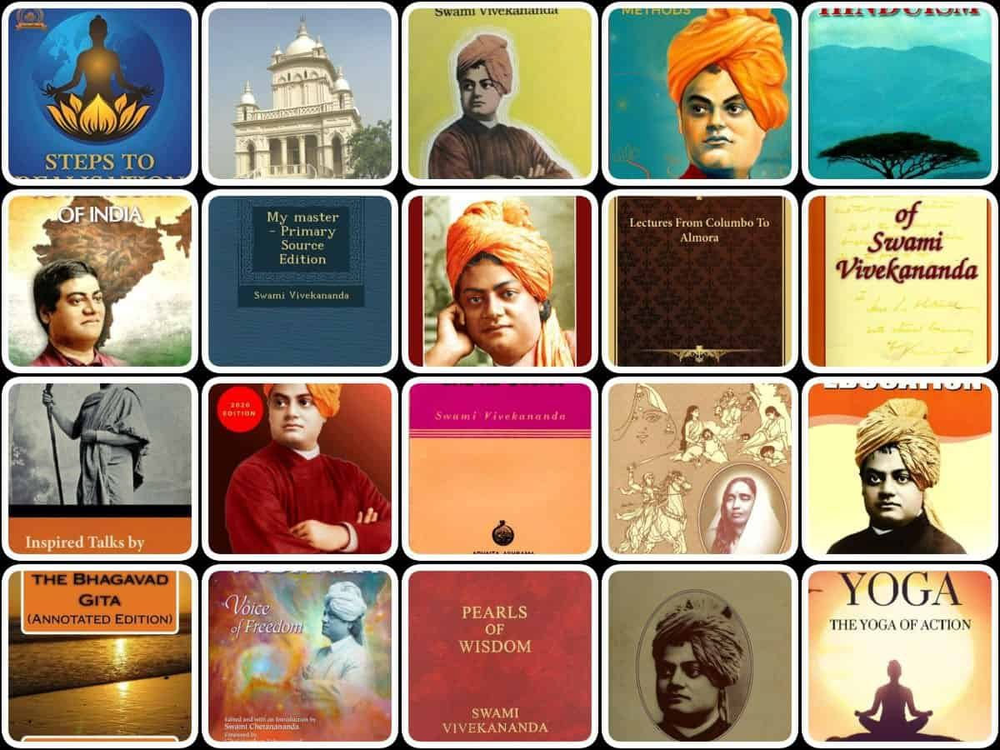
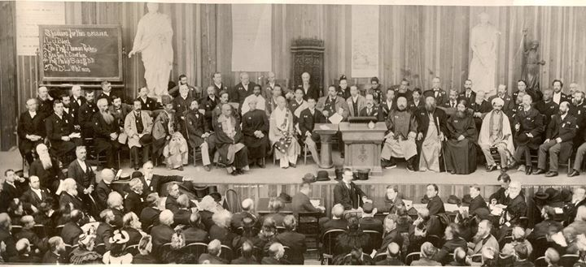
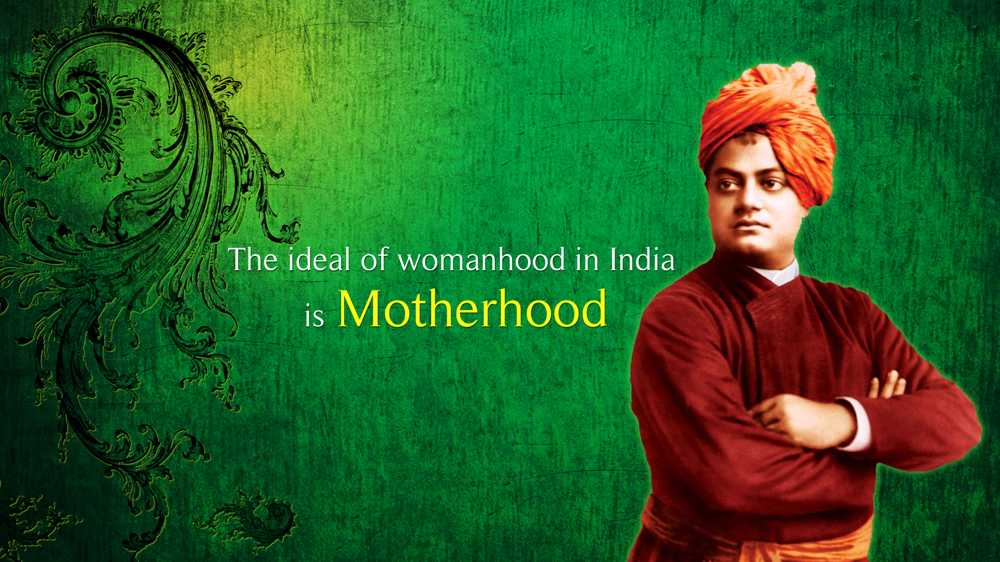

Who was Swami Vivekananda?
Swami Vivekananda (1863–1902) was a prominent Indian monk and spiritual leader. Born as Narendranath Datta in Kolkata, he was deeply influenced by his guru, Sri Ramakrishna Paramahamsa. Vivekananda played a key role in the revival of Hinduism in India and introduced Vedanta philosophy to the Western world.
His teachings emphasized the unity of all religions and the importance of spiritual realization. He founded the Ramakrishna Math and the Ramakrishna Mission, which continue to propagate his teachings of service to humanity.
Early Life
Swami Vivekananda was born on January 12, 1863, in Kolkata (formerly Calcutta) to a traditional Bengali family. From a young age, he showed a curious mind and an inclination towards spirituality.
He met his guru, Sri Ramakrishna Paramahamsa, in 1881, who had a profound impact on Vivekananda’s spiritual evolution. Under Ramakrishna’s guidance, Narendranath (Vivekananda’s pre-monastic name) experienced spiritual enlightenment and embraced a life dedicated to service and knowledge.
Teachings
Swami Vivekananda’s teachings are characterized by their practicality, universality, and emphasis on self-realization and service to humanity.
He believed in the harmony of religions, stating that “truth is the basis of all religions.” Vivekananda encouraged people to experience spirituality directly through meditation and inner reflection rather than blindly following dogmas.
His famous speeches at the World Parliament of Religions in Chicago in 1893 brought him international recognition, where he eloquently spoke about tolerance, acceptance, and the importance of understanding different cultures and religions.
Impact and Legacy
Swami Vivekananda’s impact on society and spirituality is profound and far-reaching.
He founded the Ramakrishna Math and the Ramakrishna Mission, which are active in various fields including education, healthcare, and relief work. These institutions continue to promote Vivekananda’s ideals of service, harmony, and spiritual growth.
Vivekananda’s teachings have inspired numerous individuals, from spiritual seekers to social reformers. His emphasis on education as a tool for social transformation remains relevant in contemporary times.
Philosophy and Spiritual Teachings
Swami Vivekananda's philosophy was rooted in the Vedantic tradition but was also deeply influenced by his practical experiences and encounters with people from different cultures and backgrounds.
He emphasized the practical application of spirituality in everyday life, advocating for a balance between contemplation and action, knowledge and compassion.
Vivekananda's teachings on karma yoga (the path of selfless service), bhakti (devotion), and jnana (knowledge) continue to inspire individuals seeking personal growth and spiritual enlightenment.
Legacy and Recognition
Swami Vivekananda is remembered not only for his profound spiritual teachings but also for his contributions to social reform and education.
He was a vocal advocate for social equality, condemning discrimination based on caste, creed, or gender. His speeches and writings continue to inspire movements for social justice and human rights.
Vivekananda's legacy extends beyond India; he is revered as a philosopher, spiritual leader, and humanitarian across the globe.
Writings and Publications
Swami Vivekananda's writings cover a wide range of topics, including philosophy, spirituality, education, and social issues.
His books such as "Raja Yoga," "Karma Yoga," and "Jnana Yoga" provide practical insights into the paths of yoga and spiritual development.
Vivekananda's letters, lectures, and essays continue to be studied and referenced for their clarity of thought and depth of wisdom.
Global Influence
Swami Vivekananda's teachings and philosophy have had a lasting impact on thinkers, leaders, and spiritual seekers worldwide.
His emphasis on religious tolerance, universal acceptance, and the pursuit of truth resonates with people from diverse cultural and religious backgrounds.
Vivekananda's message of unity and harmony continues to inspire efforts towards global peace and understanding.
His historic address at the World's Parliament of Religions in Chicago in 1893 catapulted him into the international spotlight, introducing the West to the rich spiritual traditions of India. Through his teachings, Vivekananda emphasized the importance of religious tolerance, harmony, and the unity of all religions.
Spiritual Legacy
Swami Vivekananda's spiritual legacy lives on through the Ramakrishna Order and Mission, which he established to propagate his teachings and ideals.
The Ramakrishna Order emphasizes the harmony of religions, selfless service, and spiritual growth through meditation and study of Vedanta.
Vivekananda's disciples and successors have continued to spread his message, establishing centers and educational institutions worldwide.

Dedicated Work and Service
Throughout his life, Swami Vivekananda dedicated himself to uplifting the masses, especially the poor and marginalized.
He believed that true spirituality must manifest as service to society, addressing both material and spiritual needs.
Vivekananda's humanitarian work included relief efforts during famines and epidemics, educational initiatives, and advocacy for social reforms.
